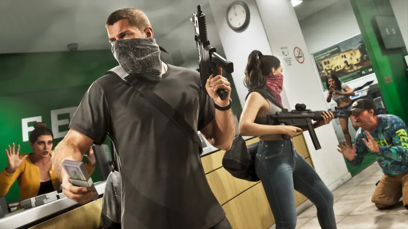
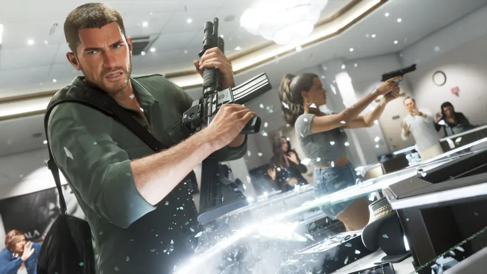
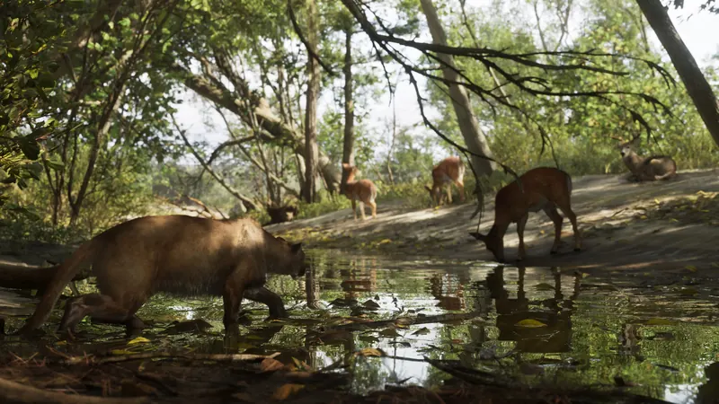

How do you make money fast in GTA 6?
Short answer
Early on, the best earners are robbing other criminals mid-crime, stealing cars for fences like Moses, hunting for Bret and the demolition derby at Ambrosia Raceway.

Early-game methods
Summarized from PC Gamer and GamesRadar (in-game dollars):
- Rob other criminals mid-crime: $1,000 to $15,000. PC Gamer calls it the best advice for making money.
- Steal cars for fences (from Chapter 2): $1,000 to $20,000 depending on the model and fence. Moses usually pays one to a few thousand per car; Randy, from Chapter 3, pays more for high-end cars.
- Hunting for Bret (Chapter 2, Jason only): from hundreds to thousands per kill; PC Gamer got $2,500 for a large boar.
- Demolition derby at Ambrosia Raceway: $3,800 to $6,300 per win, and you can repeat it.
- Store robberies through the back door (from Chapter 3): the snap gun lets you pick locks and skip alarms; PC Gamer puts the take at $6,000 to $15,000.
- Pilot Pete's drops (Chapter 4): timed package drops from his plane for $10,000 to $20,000, per PC Gamer.
How to rob a store without tripping the alarm
Tips from GameSpot's robbery guide:
- Check the map first: every business has a Low, Medium or High security level. Nearly all have an employee, an alarm and cameras.
- Crowd first, then the alarm: smashing displays or doors sets it off. Disable it at a white wall panel, usually in a back room; Focus mode (click both sticks) highlights it.
- Cameras: if you're recorded, find the security room and destroy the footage, or police will identify you when you leave. Or shoot cameras first, ideally with a suppressor.
- Use the back door: the Snap Gun, unlocked through the story, picks locks without tripping the alarm. Your map shows back entrances while you're inside a building.
- Safes: codes are randomized every robbery; look for the code on a guard or nearby. Smaller safes can be picked.
- Banks and loan stores: they pay in marked bills you must sell to a fence, and dye packs explode if you get too far away unless you have a jammer.
- Rob as a pair: in bigger places, the character you're not controlling handles crowd control.


Other options
- Mug people or hold up cashiers, and once you can afford a winch from a Mod Shop, rip out ATMs (GamesRadar).
- Sell cars at Pay 'n' Spray (more in how to keep or sell a car).
- Check the Robberies section of the map index, which shows the potential score of each target (GamesRadar).
Cash in your pocket isn't safe: see how the BuckMe bank works.
Sources
- PC Gamer: GTA 6, the fastest ways to make money
- GamesRadar: How to farm money in GTA 6 and make cash fast
- GameSpot: GTA 6 safe codes and robberies guide (Nov 18, 2026)
Written by Six Stars from the sources above, checked on November 20, 2026. Spot a mistake? Tell us via About us.